White Mage
Appearances: FF1, FF3, FF4, FF5, FF7, FF9, FF10, FFX-2, FF11, FF12RW, FFT, FFTA, FFTA2
Aliases: White Wizard, Shaman, Priest, Bishop
White Mages are the direct opposite of Black Mages. Instead of using their magic to hurt, they use it to heal or protect. As such, most white mages are portrayed as females. They wear white robes trimmed with red trim and wield staffs. Like other mages, they tend to be weak in strength, and in their case, have very little offensive power. They offset this by supporting the party in defense. In recent games, weaker job classes have been supplemented by white mage skills, such as Archer, Paladin, and Summoner.
Similar Job Classes: Black Mage, Red Mage, Blue Mage, Paladin,
Penelo (12RW)
Expand All Images | Collapse All Images
| FF1 |
| 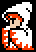 |
| NAME: White Mage |
| OVERVIEW: Evolves into White Wizard |
| WEAPONS: Masamune, Small Dagger, Heal Staff, Power Staff, Wooden Staff, Iron Hammer, Silver Hammer |
| ATTRIBUTES: High magic, low strength, low agility |
MAGIC:
White Magic: Cure, Harm, Ruse, Fog, ALit, Invs, Lamp, Mute, AFir, Cur2, Heal, Hrm2, AIce, AMut, Fear, Pure, Cur3, Hrm3, Life, Hel2, Fog2, Inv2, Soft, ARub, Hel3
|
|
| FF1 |
| 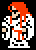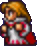 |
| NAME: White Wizard |
| OVERVIEW: Evolved from White Mage |
| WEAPONS: Masamune, Small Dagger, Heal Staff, Power Staff, Wooden Staff, Iron Hammer, Silver Hammer, Thor's Hammer |
| ATTRIBUTES: High magic, low strength, low agility |
MAGIC:
White Magic: Cure, Harm, Ruse, Fog, ALit, Invs, Lamp, Mute, AFir, Cur2, Heal, Hrm2, AIce, AMut, Fear, Pure, Cur3, Hrm3, Life, Hel2, Exit, Fog2, Soft, Inv2, Cur4, Hrm4, ARub, Hel3, Fade, XFer, Lif2, Wall
|
|
| FF2 |
|
| NAME: Minh |
| OVERVIEW: Comes with White Magic, but resembles the FF5 Sorceror |
| WEAPONS: Cane, Ice Scythe |
| ATTRIBUTES: |
MAGIC:
White Magic: Cure, Life, Peep, Heal, Barrier, Blink, Safe, Shell, Wall, Dispel, Mute, Anti, Fog, Change, Fear, Exit
|
|
| FF3 |
 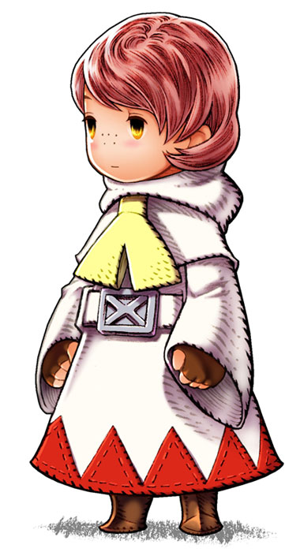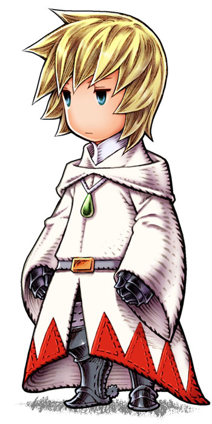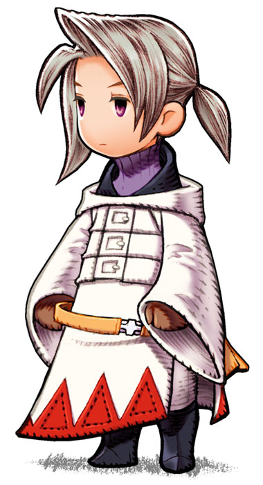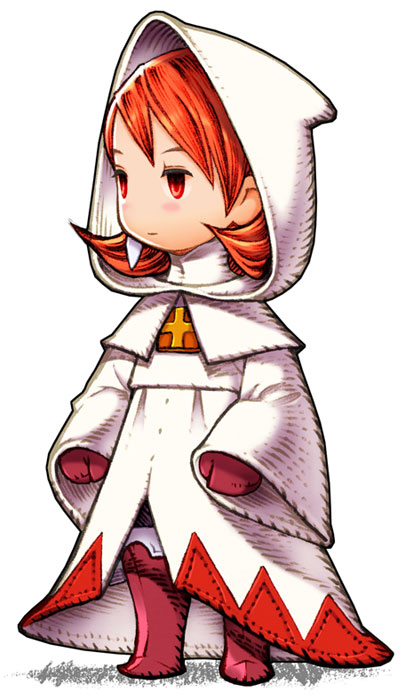 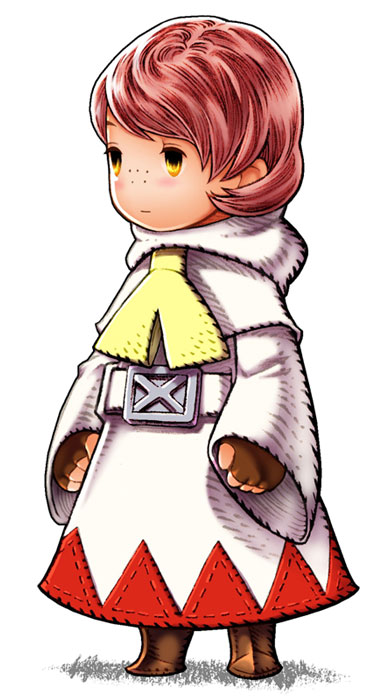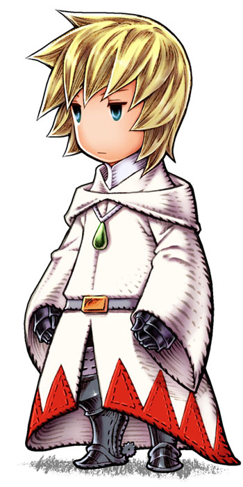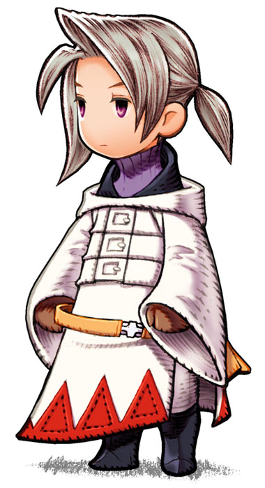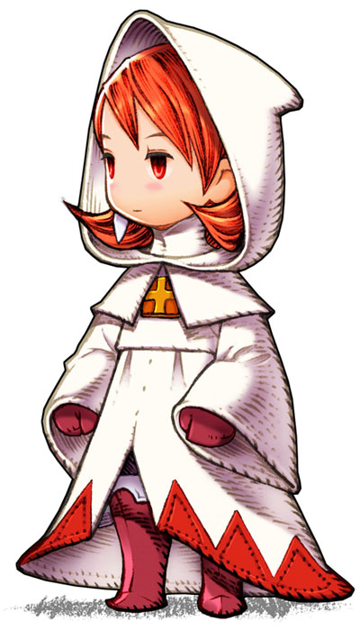 |
| NAME: White Wizard (FF3) / White Mage (FF3DS) |
| OVERVIEW: Evolves into Shaman |
| WEAPONS: Staff, Mithril Rod, Freezing Staff, Burning Staff, Shining Staff, Golem Staff, Rune Staff |
| ABILITIES/MAGIC:
Fight - Attack with equipped weapon
Magic - Cast magic spell
Run - Run away from battle
Item - Use an item from inventory
|
| ATTRIBUTES: High magic defense, low magic power
|
|
| FF3 |
 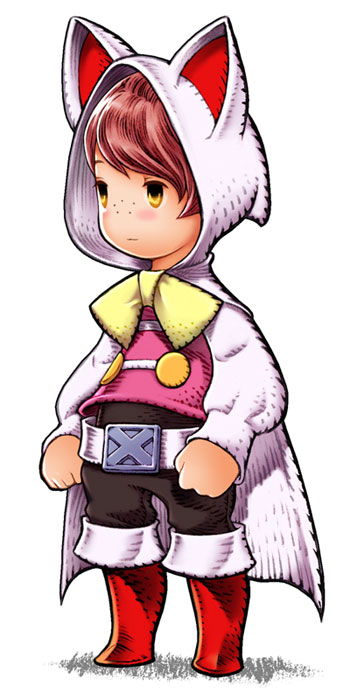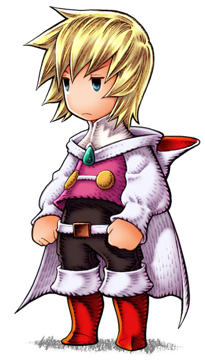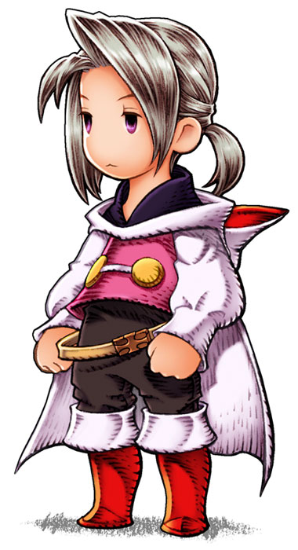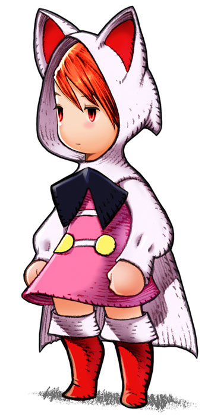 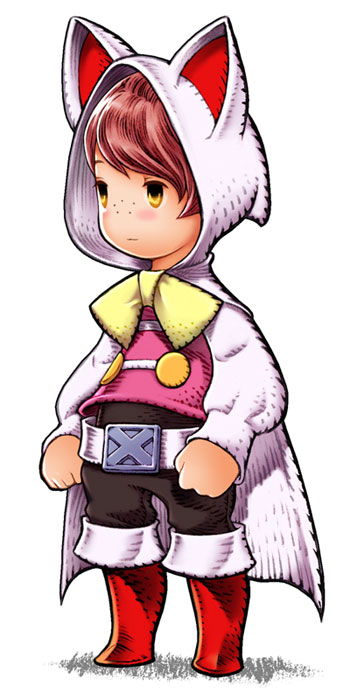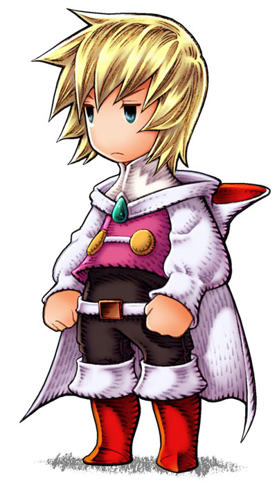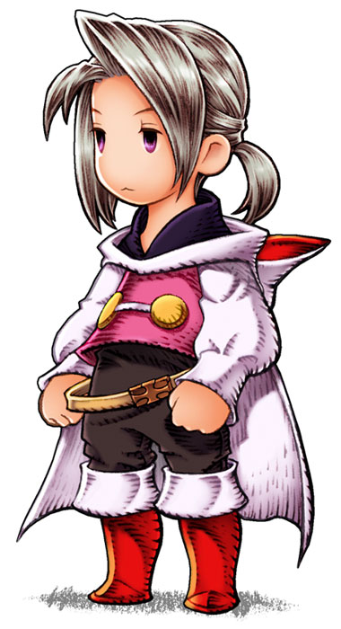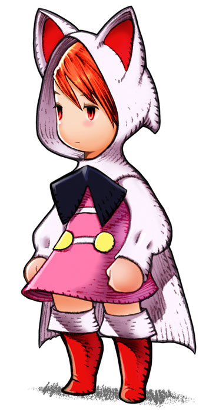 |
| NAME: Shaman (FF3) / Devout (FF3DS) |
| OVERVIEW: Evolved from White Mage |
| WEAPONS: Staff, Freezing Staff, Burning Staff, Shining Staff, Golem Staff, Rune Staff, Mithril Rod, Eldest Staff
|
| ABILITIES/MAGIC:
Fight - Attack with equipped weapon
Magic - Cast magic spell
Run - Run away from battle
Item - Use an item from inventory
|
| ATTRIBUTES: High magic defense, low magic power, low strength
|
|
| FF4 |
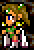  |
| NAME: Rosa Farrell |
| OVERVIEW: Rosa is also an Archer. |
| WEAPONS: Uses bow & arrow best |
| ABILITIES/MAGIC:
Pray - Small amount of HP restored to entire party
Aim - Focus arrows for better accuracy
White - Cast White Magic
|
| ATTRIBUTES: High magic, low strength |
|
| FF4 |
| 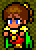 |
| NAME: Porom |
| OVERVIEW: Porom is a pure White Mage, but combines with Palom for a special Black Magic attack. |
| WEAPONS: Staffs and Rods |
| ABILITIES/MAGIC:
Cry/Tears - Decrease all enemy dexterity, increase chance of escape
Twin - Team with Palom to perform a special magic attack
White - Cast White Magic
|
| ATTRIBUTES: High black magic, low strength, low HP, low speed |
|
| FF5 |
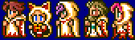
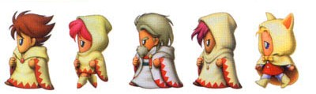 |
| NAME: White Mage |
| OVERVIEW: Has various White Magic spells. |
| WEAPONS: Staffs, Flail, Morning Star |
| ABILITIES/MAGIC-:
!White - Cast White Magic (default)
MP+10% - Increase max MP by 10%
|
| ATTRIBUTES: High magic, low strength |
|
| FF7 |
|
| NAME: Aeris Gainsborough |
| OVERVIEW: None of Aeris' limits involve damaging the enemy. They involve healing, or stopping the enemy. |
| WEAPONS: Staffs |
| LIMITS:
Healing Wind - Recover a majority of HP
Seal Evil - Cause Stop and Silence on all enemies
Breath of Earth - Beams of light heal abnormal status effects
Fury Brand - Cause Fury to party and fill all limit break bars to maximum
Planet Protector - Form an invincible barrier around the party for a short time
Pulse of Life - Heal abnormal status, recover all HP and MP, revive fallen party members
Great Gospel - Fully recover all HP and MP, and make party invincible for a short time |
| ATTRIBUTES: High MP, high magic power, high magic defense, low HP, low speed |
|
| FF9 |
 |
| NAME: Dagger (A.K.A Garnet Til Alexandros) |
| OVERVIEW: Dagger is also a Summoner. Eidolons are earned through AP on jewels with earnable summons. Dagger has these summons available: Shiva, Ifrit, Ramuh, Atomos, Odin, Leviathan, Bahamut, Ark |
| WEAPONS: Rods |
ABILITIES/MAGIC:
Summon - Summon a powerful monster to deliver a massive attack
White Magic - Cast White Magic
Trance:
Eidolon - Summon a powerful monster to deliver a massive attack every turn for no MP cost
|
| SUPPORT ABILITIES (character specific): Boost, Odin's Sword |
| ATTRIBUTES: High magic power, low strength |
|
| FF9 |
 |
| NAME: Eiko Carol |
| OVERVIEW: Eiko is also a Summoner. Eidolons are earned through AP on jewels with earnable summons. Eiko has these summons available: Carbuncle, Fenrir, Phoenix, Madeen |
| WEAPONS: Flutes |
ABILITIES/MAGIC:
Summon - Summon a powerful monster to deliver a massive attack
White Magic - Cast White Magic
Trance:
Double White - Cast two spells in the same turn |
| SUPPORT ABILITIES (character specific): Boost, Concentrate, Guardian Mog |
| ATTRIBUTES: High magic power, low strength |
|
| FF10 |
 |
| NAME: Yuna |
| OVERVIEW: Yuna is also a Summoner. Aeons are earned throughout the storyline or side-quests. Yuna has these summons available: Valefor, Ifrit, Ixion, Shiva, Bahamut, Yojimbo, Anima, Magus Sisters |
| WEAPONS: Staffs |
ABILITIES/MAGIC:
Pray - Restore minor HP to party at no MP cost
Summon - Summon a monster to fight in place of party
Overdrive:
Grand Summon - Summon a monster to fight in place of party with full overdrive
|
| ATTRIBUTES: High magic, high magic defense, high evasion, low strength, low defense |
|
| FFX-2 |
 |
| NAME: White Mage |
| OVERVIEW: White mages cannot attack, unless afflicted with Berserk. Vigor recovers a bit more HP than Pray. |
| WEAPONS: Staff |
| ABILITIES/MAGIC:
Pray - Restore minor HP to entire party
Vigor - Restore some HP to self
White Magic - Cast White Magic
|
| SUPPORT ABILITIES: White Magic Lv.2 (decrease wait time for spell by 30%), White Magic Lv.3 (decrease wait time for spell by 50%) |
| ATTRIBUTES: High MP, high magic power, high magic defense, low HP, low strength, low physical defense, low accuracy |
|
| FF11 |
  |
| NAME: White Mage |
| OVERVIEW: Benediction can only be used once every two hours. Has increased magic resistance. |
| WEAPONS: Uses staffs and clubs best |
| ABILITIES/MAGIC:
Benediction - Restore a large amount of HP and remove all status ailments for party
Divine Seal - Enhances power of next healing spell
Martyr - Sacrifice 25% HP to heal party member (healing equals 2x sacrificed HP)
Devotion - Sacrifice 25% HP to give party member same amount of MP
White Magic - Cast White Magic
|
| SUPPORT ABILITIES: Magic Defense Up, Clear Mind, Auto Regen, Divine Veil |
| ATTRIBUTES: High magic defense, low physical defense, low attack power |
|
| FF12RW |
 |
| NAME: White Mage |
| OVERVIEW: Only enemy humes can be white mages. |
| WEAPONS: N/A |
| ABILITIES/MAGIC:
Cure, Revitalize, Curaga, Protectga, Shellga, Esunaga, Dispelga, Holy
|
|
| FF: Tactics |
 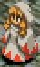 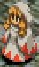 |
| NAME: White Mage/Priest (PSX) |
| OVERVIEW: Includes casting Regen on the self when attacked. |
| WEAPONS: Staff |
ABILITIES/MAGIC:
White Magicks/White Magic (PSX): Cure, Cura/Cure2 (PSX), Curaga/Cure3 (PSX), Curaja/Cure4 (PSX), Raise, Arise/Raise2 (PSX), Reraise, Regen, Protect, Protectja/Protect2 (PSX), Shell, Shellja/Shell2 (PSX), Wall, Esuna, Holy
Reaction Ability: Regenerate/Regenerator (PSX) - Cast Regen on self when attacked
Support Abilities: Arcabe Defense/Magic Defend Up (PSX)
Move Abilities: None
|
| ATTRIBUTES: High MP, high magic power |
|
| FF: Tactics Advance |
      |
| NAME: White Mage |
| OVERVIEW: Fewer spells. |
| WEAPONS: Staff |
| ARMOR:
| ABILITIES/MAGIC:
White Magic: Cure, Cura, Curaga, Esuna, Life, Full-Life, Auto-Life, Shell, Protect
Reaction Abilities: None
Support Abilities: Turbo MP - Increase potency of spells at double MP cost
Combo: White Combo |
| ATTRIBUTES: |
|
| FF: Tactics Advance |
  |
| NAME: Bishop |
| OVERVIEW: Combination of White Magic and elemental damage. A Bangaa-only job. |
| WEAPONS: Staves |
ABILITIES/MAGIC:
Prayer:
Cura - Heal HP
Dispel - Remove status effects
Holy - Cause Holy damage
Barrier - Raise DEF and RES
Judge - Steal JP from target
Water - Cause water damage
Aero - Cause wind damage
Break - Petrify target
Reaction Abilities: Return Magic - Counter magic spell with same spell
Support Abilities: Half MP
Combo: Pray Combo |
|
| ATTRIBUTES: High MP, high magic power, low evasion, low attack power, low defense |
| FF: Tactics A2 |
         |
| NAME: White Mage |
| OVERVIEW: Mostly identical to White Mage from FFTA, with a few skills moved to Green Mage. |
| WEAPONS: Staff |
ABILITIES/MAGIC:
White Magick: Cure, Cura, Curaga, Esuna, Raise, Arise, Reraise, Refresh (heal debuffs that Esuna doesn't)
Reaction Abilities: None
Support Abilities: Turbo MP - Increase potency of spells at double MP cost
|
Final Fantasy, all games and animation bearing the Final Fantasy name, and all characters in said games or animation are copyright their respective creators, including but not limited to Squaresoft, Square Enix, Square EA, Tokyo TV, and ADV Films.
|
 Characters
Characters Places
Places Stories
Stories Species
Species Organizations
Organizations Glossary
Glossary Transportation
Transportation Monsters
Monsters Jobs
Jobs Summons
Summons Items
Items Magic/Skills
Magic/Skills Weapon Types
Weapon Types In-Crossovers
In-Crossovers Ex-Crossovers
Ex-Crossovers Release Dates
Release Dates Name Origins
Name Origins Famous Moments
Famous Moments Music Database
Music Database Features
Features Game Help
Game Help Game Evolution
Game Evolution Square Art
Square Art Fan Flash
Fan Flash Final Fantasy Forums
Final Fantasy Forums Updates
Updates Site Info
Site Info Feedback
Feedback Full Index
Full Index Links
Links Staff
Staff